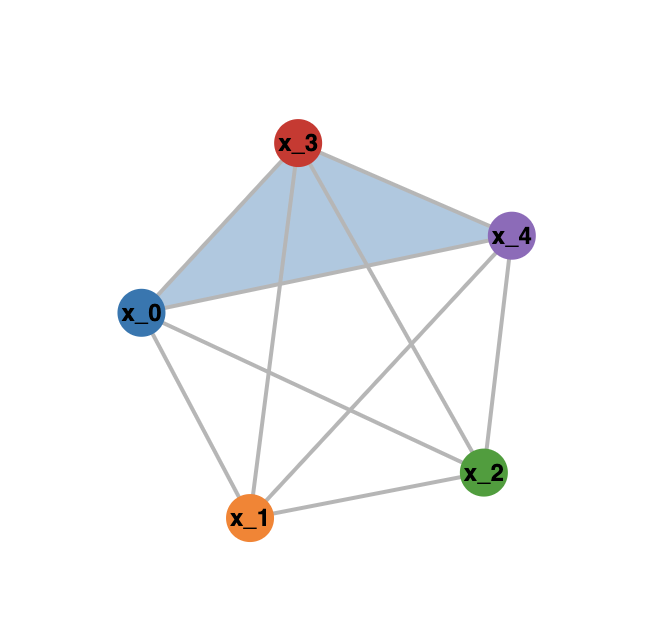

Computing the boundary complex using Macaulay2
2023-05-08
Suppose you are given a divisor $D$ on a variety $X$, with $D=\cup_{i=0}^N D_i$ the decomposition into its irreducible components. Suppose moreover that the divisor is simple normal crossing, or even combinatorial normal crossing in the sense that all non-empty intersections $D_{i_1}\cap ... \cap D_{i_k}$ have codimension $k$. One can form the boundary complex $\Delta(D)$ of $D$, a simplicial complex on the set $\{0,...,N\}$ recording the intersection properties of the $D_i$. We proceed as follows:
- For each $D_i$, add a vertex $[i]$ to the complex $\Delta (D)$.
- For each non-empty intersection $D_{i_1} \cap ... \cap D_{i_k}$, add a k-simplex $[i_1,..,i_k]$ between the vertices $[i_1]$, $[i_2]$,... through to $[i_k]$.
When working in the projective plane $\mathbb{P}^2$, we might have a divisor $D$ given as the union of curves $D_0,...,D_N$, each given by a corresponding irreducible polynomials $f_i$. Suppose we are given this list of polynomials $f_0,...,f_N.$
Here is some Macaulay2 code that will compute the boundary complex in this case:
boundaryComplex = method()
boundaryComplex := listOfDivisors -> (
-- Helper function, takes list of polynomials and determines
-- if their intersection is irrelevant ideal
intersectionIsIrrelevantIdeal = s -> (
radical(ideal(s)) != ideal(y_0,y_1,y_2)
);
-- Select all possible subsets of divisors
rawPolySubs = subsets(listOfDivisors);
polySubs = rawPolySubs_{1..(#rawPolySubs-1)};
-- Create a true/false mask for when this intersection is the irrelevant
-- ideal and hence those divisors do not intersect in projective space
mask = apply(polySubs,intersectionIsIrrelevantIdeal);
-- List all faces
R=QQ[x_0..x_(#listOfDivisors-1)];
-- take subsets of numbers 0 through length(listOfDivisors), then
-- drop the first as it is always the empty set
faceNums = drop(subsets(toList(0..(#listOfDivisors-1))),1);
faceSubs = drop(subsets(toList(x_0..x_(#listOfDivisors-1))),1);
-- Filter by the mask
faceMonomials = {};
faceList = {};
for i in 0..(#faceSubs-1) do (
if mask#i then (
faceMonomials=append(faceMonomials,fold((i,j)->i*j, faceSubs#i));
faceList=append(faceList,faceNums#i);
)
);
(simplicialComplex(faceMonomials),faceList)
)
The function outputs two objects:
- First, a
SimplicialComplexobject, which is exactly $\Delta(D)$, and can be easily visualized (see below). - Second, a list of the faces of this simplicial complex as subsets of the integers $0,..,N$,
which can be useful for a quick inspection and building the simplicial complex in some other
program, such as
Polymake
An example run of this code is given as follows:
S = QQ[y_0..y_2]
l0 = y_0
l1 = 2*y_1-y_2+y_0
l2 = y_2
c1 = y_0*y_1 + y_0*(y_2 - y_0) + y_1*(y_2 - y_1)
c2 = y_0*y_1 + y_0*(y_2 - 3*y_0) + 3*y_1*(y_2 - 3*y_1)
listOfDivisors = {l0,l1,l2,c1,c2}
(bc, lf) = boundaryComplex(listOfDivisors)
Moreover, using the Visualize package, we can quite easily visualize two-dimensional
simplicial complexes (three-dimensional are per now not supported). In the above example this would
proceed as follows:
loadPackage "Visualize"
openPort("8090")
visualize bc
closePort()
lsof -i tcp:8090 and kill the process holding onto the port).
This should give you a nice interactive browser animation, looking similar to the following image: 
For three-dimensional simplicial complexes, the following code will transform the list lf into a string which can be pasted in polymake to create the corresponding polymake simplicial object:
facesToPolymakeSimplicialComplex = method()
facesToPolymakeSimplicialComplex := lst -> (
listStr = toString(lst);
listStr = replace("{","[",listStr);
listStr = replace("}","]",listStr);
out = concatenate({"$s = new SimplicialComplex(INPUT_FACES=>", listStr, ");"});
out
)
facesToPolymakeSimplicialComplex(lf)
This can then be visualized using the command $s->VISUAL;
- Grayson, Daniel R. and Stillman, Michael E., Macaulay2, a software system for research in algebraic geometry, http://www.math.uiuc.edu/Macaulay2/
- Ewgenij Gawrilow and Michael Joswig, polymake: a framework for analyzing convex polytopes, https://polymake.org/doku.php/start